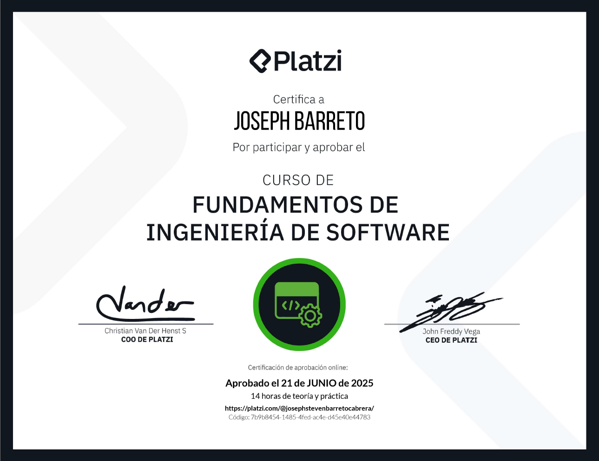
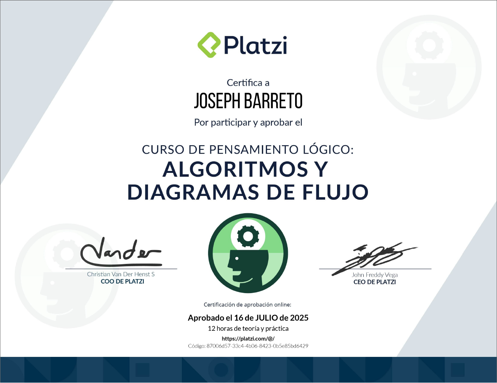
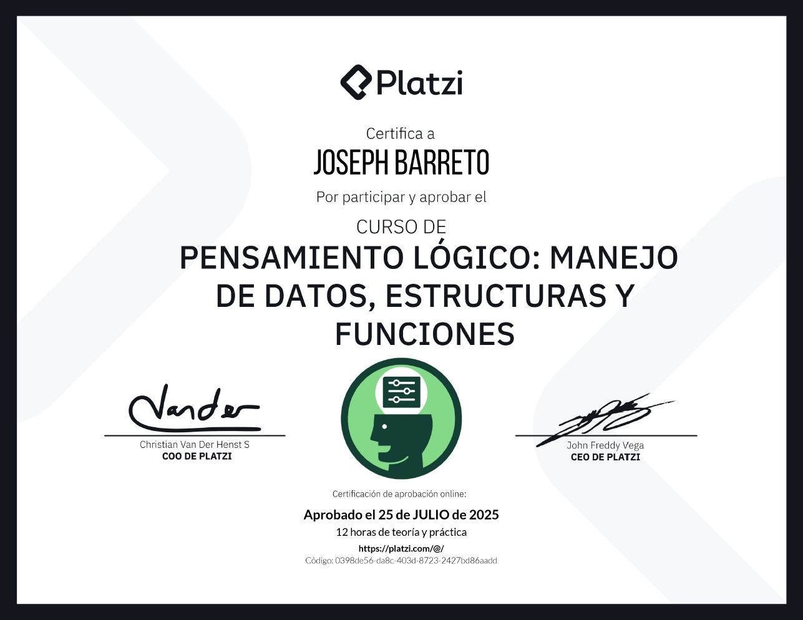
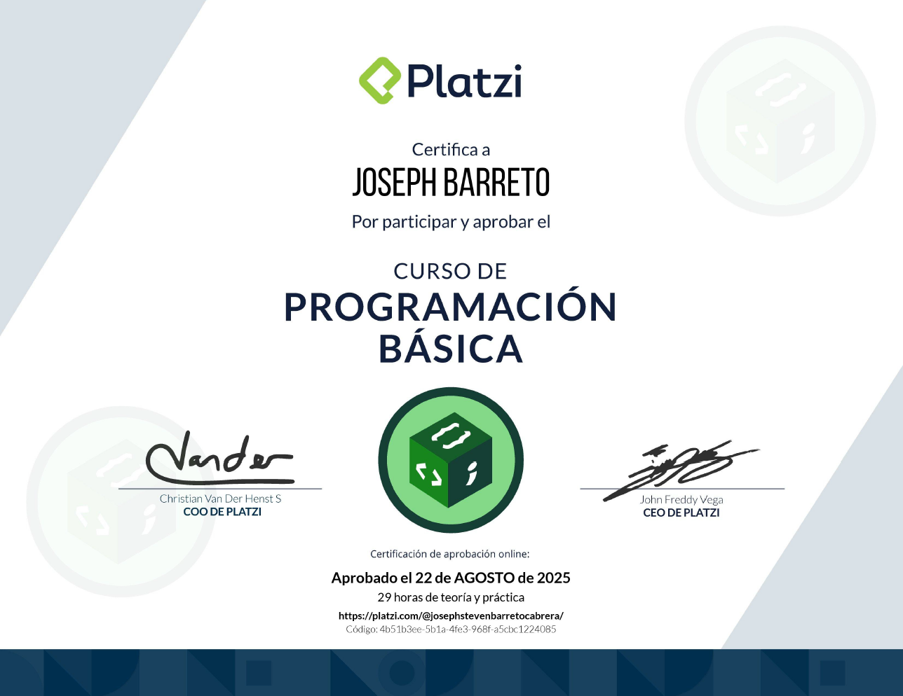

Habilidades y Tecnologías
Lenguajes
- JavaScript
- Python
Frameworks / Herramientas
- React
- Git / GitHub
- MySQL
Conceptos
- POO
- Arquitectura de software
- Bases de datos relacionales
Habilidades Blandas
Soy alguien que en este ámbito se desenvuelve con fluides, en la resolución de problemas siempre busco la mejor manera de contribuir y ayudar a darle una solución concisa, entendible y escalable gracias a mi pensamiento lógico. Mayormente me gusta trabajar en equipo y cooperar con los demás para llegar a un objetivo en común, siempre y cuando estén dispuestos a lo mismo.
Constantemente me gusta aprender cosas nuevas que aporten a mi formación como desarrollador, si hay algún tema con el cual no cuento con el conocimiento, no lo veo como un obstáculo sino como una oportunidad de crecer.
Proyectos
Proximamente...
Experiencia académica
Ingeniería de Software | Universidad de Cundinamarca
6º semestre
Fundamentos de Ingeniería de Software | Platzi
Argoritmos y diagramas de flujo | Platzi
Pensamiento lógico: Manejo de datos, estructuras y funciones | Platzi
Programación básica | Platzi
Aprendizaje continuo
Cursos en progreso
Actualmente realizo un aprendizaje constante y progresivo de Python, con cursos y prácticas
Contactame
Correo: josephbc204@gmail.com
LinkedIn: www.linkedin.com/in/joseph-barreto-a4771a274
GitHub: https://github.com/TatakeJ